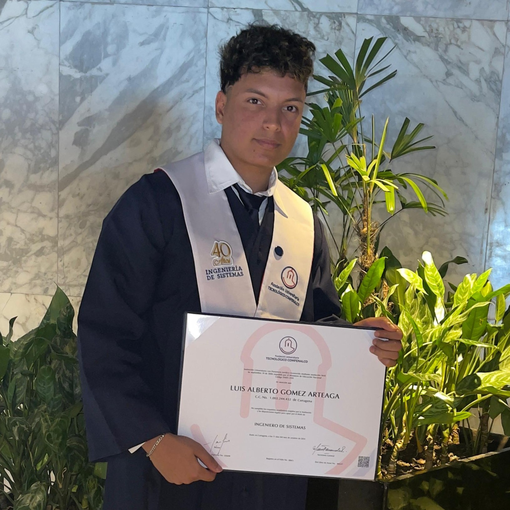

<div class="about_container py-5">
  <div class="container">
    <div class="row">
      <div class="col-12 col-lg-5 d-flex justify-content-center">
        
      </div>
      <div class="col-12 col-lg-7 mt-3">
        <div class="info_conteiner">
          <h2>SOBRE MÍ</h2>
          <span>
            Soy un Ingeniero de Sistemas egresado de la Fundación Universitaria Tecnológico Comfenalco de la ciudad de Cartagena, 
            con sólida experiencia full-stack en desarrollo backend (Java, Spring Boot) y
            frontend (JavaScript, TypeScript, Angular, Vue.js). Especializado en la construcción de APIs REST y
            microservicios, aplicando principios SOLID y arquitectura hexagonal. Experiencia en bases de datos
            relacionales como MySQL. Destacado por la comunicación efectiva con líderes técnicos y product
            owners, adaptabilidad a metodologías ágiles como SCRUM, y una fuerte orientación al aprendizaje
            continuo y mejora constante.
          </span>
        </div>
      </div>
    </div>
  </div>
</div>